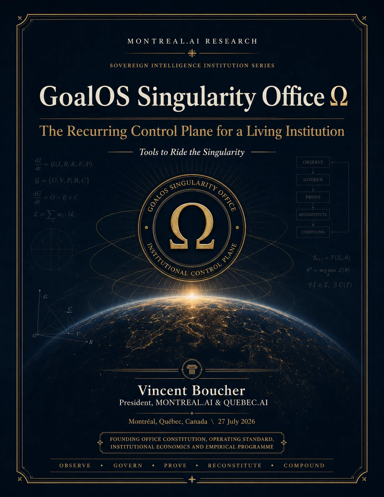

Continu
Changements de frontière, incidents, expiration de preuve et déclencheurs matériels.
Bureau Ω
Le plan de contrôle récurrent d’une institution vivante : Observer, Gouverner, Prouver, Reconstituer, Composer.
Continuité sous accélération
Un plan de contrôle récurrent qui observe la frontière, gouverne des missions bornées, prouve les conséquences, reconstitue l’architecture et ne compose que ce qui survit.
L’intégrité de la version publique est distincte de la validation sur le terrain, de l’acceptation client et de la valeur économique vérifiée.
Planche institutionnelle complète
La couverture du papier fondateur est préservée sans rognage ni distorsion. La version publique et l’environnement protégé demeurent des surfaces institutionnelles séparées.

Cadence d’exploitation
Changements de frontière, incidents, expiration de preuve et déclencheurs matériels.
Portefeuille de missions, dette de preuve ouverte, actions bloquées et capacités émergentes.
Capital, architecture, acceptation, droits et examen du successeur.
Rejouer l’architecture lorsque des faits matériels invalident l’état institutionnel courant.
Limite de vérification
Intégrité structurelle, syntaxe, séparation des signatures publiques et privées, et intégrité des archives.
Ce n’est ni une certification générale de sécurité, ni un avis juridique, ni une validation sur le terrain, ni une acceptation client, ni une preuve de valeur client.
L’environnement protégé et le Coffre éditeur privé ne doivent jamais être téléversés sur GitHub Pages, publiés dans un dépôt ou distribués aux clients.